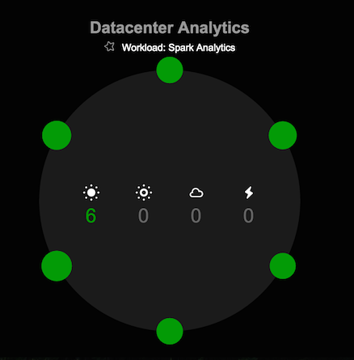
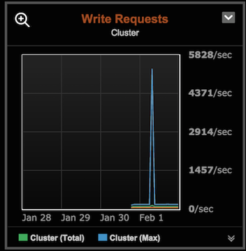

Carbonne Yann
Guez Jérémie
Kubryk Maxime 
CREATE KEYSPACE IF NOT EXISTS wiki
WITH replication = { 'class': 'SimpleStrategy', 'replication_factor': '2' }
CREATE table wiki.trends_24hours (date_time timestamp, n_view bigint, name text,
h00 bigint, h01 bigint, h02 bigint, h03 bigint, h04 bigint, h05 bigint,
h06 bigint, h07 bigint, h08 bigint, h09 bigint, h10 bigint, h11 bigint,
h12 bigint, h13 bigint, h14 bigint, h15 bigint, h16 bigint, h17 bigint,
h18 bigint, h19 bigint, h20 bigint, h21 bigint, h22 bigint, h23 bigint,
PRIMARY KEY(date_time, n_view, name))
CREATE table wiki.trends_30days (date_time timestamp, n_view bigint, name text,
d00 bigint, d01 bigint, d02 bigint, d03 bigint, d04 bigint, d05 bigint,
d06 bigint, d07 bigint, d08 bigint, d09 bigint, d10 bigint, d11 bigint,
d12 bigint, d13 bigint, d14 bigint, d15 bigint, d16 bigint, d17 bigint,
d18 bigint, d19 bigint, d20 bigint, d21 bigint, d22 bigint, d23 bigint,
d24 bigint, d25 bigint, d26 bigint, d27 bigint, d28 bigint, d29 bigint,
PRIMARY KEY(date_time, n_view, name))##############
## Compute sum
##############
# group by name / month / day
rdd_24hours = rdd.map(lambda x: (x['name'] + ' ' + x['date_time'][:10], x['n_view']))
# sum the n_view
rdd_24hours = rdd_24hours.reduceByKey(lambda a, b: a + b)
# rebuild
rdd_24hours_sum = rdd_24hours.map(lambda x: {'name': x[0].split(' ')[0], 'date_time': x[0].split(' ')[1], 'n_view': x[1]})
############################
## Get n_view for each hour
############################
# same logic as before
rdd_24hours_hours = rdd.map(lambda x: (x['name'] + ' ' + x['date_time'][:10], x['date_time'][11:13] + ' ' + str(x['n_view'])))
rdd_24hours_hours = rdd_24hours_hours.reduceByKey(lambda a, b: a + ',' + b)
cluster = Cluster(['54.88.108.226'])
session = cluster.connect()
session.row_factory = dict_factory
query = "SELECT * FROM wiki.trends_" + mode + \
" WHERE date_time = '" + date_string + \
"' ORDER BY n_view DESC LIMIT 10;"
raws = session.execute(query)